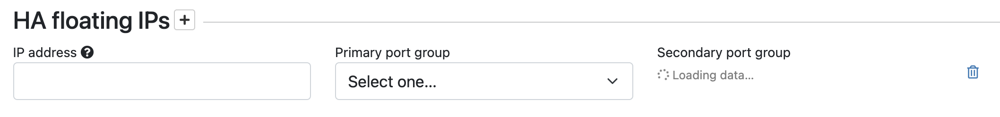

Configure High Availability Airwall Gateways (v2.2.8 and later)
Configuring high-availability (HA) Airwall Gateways in v2.2.8 and later. For v2.2-v2.2.5, see Configure High Availability for Airwall Gateways (v2.2-v2.2.5).
The high-availability architecture for Airwall Gateways distinguishes between the following Airwall Gateway roles:
- Primary vs. secondary: These roles are assigned when the HA pairing is created. The Primary Airwall Gateway is the one that is added to the overlay in the Conductor. The secondary Airwall Gateway has no configuration on its own with the exception of identity-related information and port configuration. The primary and secondary role assignment can’t be changed during the lifetime of the HA pairing.
- Active vs. standby: At any given time only one Airwall Gateway is active and participating in overlay network communications. The active Airwall Gateway maintains a heartbeat on a dedicated Ethernet link. If the active Airwall Gateway fails to send heartbeat messages to the standby, the standby takes over the overlay network communications for the HA pair.
Before You Begin
Before you configure a High-availability (HA) pair, you must:
- Have a Conductor set up and running.
- Configure and connect the physical or virtual v2.2.8 or later Airwall Gateways you wish to configure for high availability. You need two physical or two virtual Airwall Gateways. See Set up physical Airwall Gateways for more information.
- Connect both Airwall Gateways to the same underlay and overlay network.
Create a High-availability Airwall Gateway pairing
High availability Airwall Gateway pairing is supported in v2.2 and later.
To configure High-availability Airwall Gateways, you need to:
- For virtual Airwall Gateways only – Add an ethernet port
- Connect the Airwall Gateways
- Pair the Airwall Gateways for High Availability
- Make sure the Overlay Port Group settings match
1 For Virtual Airwall Gateways only – Add an ethernet port
2 Connect the Airwall Gateways
-
Select the primary Airwall Gateway and select
or add an HA Port Group
- At the top right of the Ports tab, select Edit Settings.
- Select an available HA Port Group, or, to create one, go to Ports and select an available port, and create an HA Port Group. The port group sets up a virtual connection between the Airwall Gateways you’re configuring as an HA pair. A virtual Airwall Gateway is expandable up to six (6) ports. You must configure one port for HA heartbeats with the HA role.
- Repeat step 1 with the secondary Airwall Gateway.
- If you are using physical Airwall Gateways, physically connect the primary to the secondary using an ethernet cable between the dedicated HA ethernet ports on both Airwall Gateways with an ethernet cable (so you have both a port and a physical connection between the two Airwall Gateways).
- If you are using virtual Airwall Gateways, connect the port created above to each other in the virtual network. See your Hypervisor help for instructions.
3 Pair the Airwall Gateways for High Availability
- Open the page for the Airwall Gateway you want to be Active in the HA pairing.
- Open the HA tab and select Edit Settings.
- Under Select a high-availability backup Airwall Gateway, select the secondary/standby Airwall Gateway.
-
If the port configuration on the selected secondary Airwall Gateway is different
from the configuration on the primary Airwall Gateway, you will see
an alert with the option to transfer the configuration of the primary Airwall Gateway to the
secondary Airwall Gateway.
Select Synchronize port configurations to copy the configuration
from the primary to the secondary Airwall Gateway.

- Set HA Heartbeat settings for an Airwall Gateway HA pair.
- Check Swap roles after failover if you want the standby Airwall Gateway to remain active in the event of a failover. If this is not checked, the failed Airwall Gateway will automatically become active again once it back online.
- Check Trigger fail-over when network is unavailable if you want to initiate a failover if the Airwall Gateway detects that it has no network connectivity. With this option checked, the standby will become active if the current active Airwall Gateway has no underlay connectivity on any underlay port group but the standby still does.
-
Next to HA floating IPs, select the + (plus sign), and enter
an IP address that the HA-pair will share. This IP address will be advertised by the Conductor to all peer
Airwall Gateways, but only
the active Airwall Gateway
owns it. This IP address should be routable and in the same subnets as the underlay IPs
of the HA-pair. You may skip this if the HA Airwall Gateways always
communicate through a relay. You can configure more than one floating IP if the HA Airwall Gateways have multiple
underlay ports.

- Select Update Settings.
4 Make sure the Overlay Port Group settings match
- Check the Overlay Port Group of your primary Airwall Gateway for an IP address or any other configured settings (such as DHCP, source NAT, etc).
-
The Conductor
displays an alert on the Port configuration and
HA tabs if there are discrepancies between the port
configurations. Click Synchronize port configurations to
replicate the configuration of the primary Airwall Gateway to the
secondary. Note that the secondary Airwall Gateway must be
online to replicate the settings.
Test the High-Availability Pair
You can manually reverse the active and standby roles by selecting Swap Roles. This option initiates a failover from the current active Airwall Gateway to the standby, and permanently reverse the roles irrespective of the Swap roles after failover setting.
You can also see that the Airwall Gateways are paired on the Dashboard.
Remove a High-Availability Pairing
- Open the page for the primary Airwall Gateway, and on the HA tab, select Edit Settings.
- Select Remove HA pairing.
- Select Update Settings.